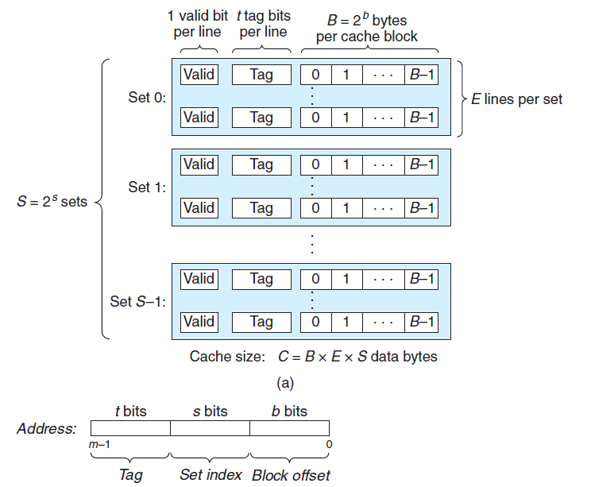
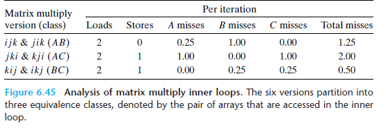
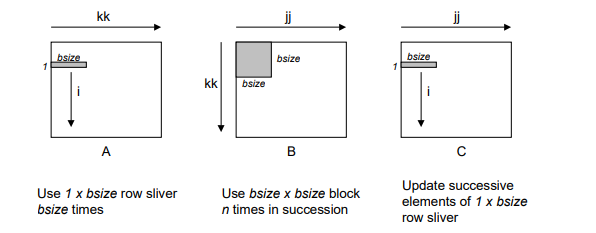
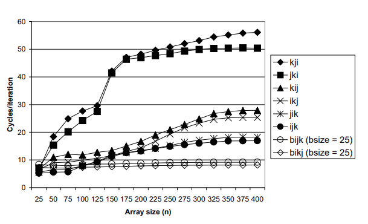

CSAPP-Lab-4 实验报告: cachelab
摘要
本文介绍了笔者在做 cachelab 一节的实验报告。该 lab 要求使用 C 语言实现 cache memory 的映射淘汰逻辑，并通过分块处理减少代码中的 cache miss。
理论知识
cache
cache，即缓存，既是一种思想，也是计算机体系结构里的一块内存。前者大家很熟悉了，通过缓存耗时操作结果来降低延时，例如 redis 就是常用的缓存中间件。后者的话，处于寄存器与主存之间的高速存储，常分为 L1、L2、L3 三级，用于提供热点数据的快速访问，这也是本文 cache 的涵义。
cache 希望达到的目标有两个：
- 充分利用存储空间：减少不必要的 cache 淘汰，提高命中率
- 快速查找：查找地址在 cache 中的速度要尽可能快，因为这是很基础的功能
cache 的核心问题是，内存地址与 cache 存储间的映射关系是怎样的，常有以下几种组织形式：
- 全相联（Fully Associative）：一个内存地址都可以存储在 cache 任意位置
- 优点：充分利用存储空间
- 缺点：查找效率差，O (n)，n 为 cache 条数
- 直接映射（Direct
Mapped）：一个内存地址被唯一映射到 cache 固定位置，例如取模
- 优点：查找效率高，O (1)
- 缺点：不能充分利用空间
- 组相联（Set
Associative）：平衡两者优点，将 cache 分为若干个组，一个内存地址被唯一映射到一个组，组内全相连
- 优点：调整超参数（组的数量），可以取得存储和速度的均衡
- 缺点：超参数怎么调呢？
事实上，全相联和直接映射可以看做组相联的特例。cache 可以定义为一个三元组 \((S,E,B)\)：有着 \(2^S\) 个组，组内有 \(E\) 条 cache，每条 cache 可以存放 \(2^B\) 字节的数据。一个内存地址被拆分为标签段（tag）、组索引段（set index）与块内偏移（block offset）三部分。如下图所示。

全相联可以看做 \(S=1\) 的组相联，直接映射可以看做 \(E=1\) 块的组相联。块是 cache 读写数据的最小单位，这意味着程序需要读取一个字节时，例如数组元素 A [0]，加载到 cache 的不仅是 A [0] 本身，而是以 A 开始的一整个块，包含 A [0]，A [1]... 这也是我们常说的预读。如果程序访问内存的模式满足这种模式，就能取得很好的空间局部性（temporal locality），提高缓存命中率，进而提升程序性能。反过来，如果不满足这种模式，就会损害性能。
一个典型的坏例子是二维数组的遍历，代码如下所示。在 C 语言中，二维数组是以行存储的一维数组。假设 cache 只能存储一个块，一个块可以包含 8 个 int，N>8，下面的代码的行为是，访问 a [i][0]，加载 a [i][0]-a [i][7]，访问 a [i+1][0]，丢弃已有 cache，加载 a [i+1][0]-a [i+1][7]，访问 a [i+2][0]，丢弃已有 cache，加载 a [i+2][0]-a [i+2][7]。。。依次重复，可以看到，缓存的预读没有起到任何作用，每次读取都无法命中缓存，带来性能开销。
1 | int sumarraycols(int a[M][N]) |
如果交换两个循环的顺序，代码变为：
1 | int sumarraycols(int a[M][N]) |
就可以很大程度提升局部性，代码的行为是，访问 a [i][0]，加载 a [i][0]-a [i][7]，访问 a [i][1]-a [i][7]，均命中缓存，访问 a [i][8]，丢弃缓存，加载 a [i][8]-a [i][15]。。。缓存命中率大大提高，由 0 变为 7/8。
矩阵乘法的优化
上述思路也可以用于优化矩阵乘法。n*n 两矩阵乘法的简单代码为：
1 | for (i = 0; i < n; i++) |
可以看到，A 的访问模式是满足步长为 1 的空间局部性的，缓存命中率高，而 B 的访问模式满足步长为 n 的局部性，命中率差。这里我们只关心最内层循环，假设一个块为 32 Bytes，元素为 double 占 8 Bytes，即一个块可以存储 4 个元素。那么，最内层循环中，A 的缓存失效率为 0.25，B 的缓存失效率为 1。
交换三层循环的顺序，可以带来缓存命中率的收益。三层循环共有 6 种顺序，上面的顺序是 ijk，将它交换为 jik 结果不变。
如果变为 jki 或 kj，性能会变得更差，jki 代码如下。最内层循环中，C 的缓存失效率为 1，A 的缓存失效率为 1。
1 | for (j = 0; j < n; j++) |
如果变为 jki 或 kj，性能会达到最好，kij 代码如下。最内层循环中，C 的缓存失效率为 0.25，B 的缓存失效率为 0.25。
1 | for (k = 0; k < n; k++) |
整理可以得到如下表格。

分块优化
上面的做法带来的命中率的提升，但仍有优化的空间。优化的思想是对矩阵进行分块，来进一步提升局部性。它的思想是尽量最大化一个块数据的用处。分析上面的代码可以发现，一个块被加载到 cache 之后，例如 B，每个元素只参与了一次运算，就会被逐出。当 C 的索引发生变化时，会再次需要加载同样的块进来，这带来了开销。根本原因在于，是在元素这个维度进行的运算，而不是块的维度。
代码如下所示
1 | void bijk(array A, array B, array C, int n, int bsize) |
访问模式如下图所示，每次从 A 选出一条 1*bsize 的行，与 B 中 bsize*bsize 的块进行乘法，叠加在 1*bsize 的 C 切片上。

性能结果如下图所示。可以看出，当矩阵大时，分块可以带来显著的收益。而矩阵小时，分块带来的额外运算成本就不能忽略了。

cache simulator
本节要求我们模拟任意的 \((S,E,B)\) 的 cache 逻辑，并支持命令行传入参数，读入 trace 文件得到 cache hit、miss、eviction 的结果。分析可以发现，工作分为两部分：
- 支持命令行参数和 trace 文件解析
- 基于 lru 的 cache
命令行参数
虽然 C 自带的 main 签名 int main(int argc,char
**argv) 就可以用于解析命令行参数，但对于参数传值有些过于简陋了，指导书建议我们使用 getopt 函数，介绍可以详见 Linux 下 getopt () 函数的简单使用
- 青儿哥哥 - 博客园 (cnblogs.com)。getopt 函数原型如下：
1 | int getopt(int argc,char * const argv[ ],const char * optstring); |
前两个参数来自 main 的签名，最后一个是以冒号分割的选项字符串，表示参数的模式，冒号表示必须传参。命令行参数解析代码如下，使用 atoi 函数将字符串转为整型，extern
char *optarg; 是一个保存了参数值的全局变量。
1 | int opt; |
trace 解析
这一部分比较简单，读入文件后，根据首字母过滤掉以 I 开头的指令访问，使用 strtoull 函数将字符串转为 unsigned
long
long 的 64 位地址。由于指导书说保证地址对齐，因此可以忽略掉 trace 中的 size 字段，对 trace 每一行，构造如下的 cache 访问对象。
1 | typedef struct CacheVisit |
lru cache
刷 LeetCode 的同学都知道，可以用双向链表 + hash 实现一个 O (1) 的 lru cache。但在 cache memory 里，这种方法会浪费很多空间，由于一个 Set 里的 cache line 数量有限，直接暴力查找淘汰性能也不会太差。我这里是只使用了双向链表，按访问时间顺序排列，头部插入，尾部淘汰。也可以使用数组保存，或者 cache line 保存时间戳等。
为了高内聚低耦合，我设计了单独的 cache.h,
cache.c 来存放相关代码。cache.h 中声明结构体对象和暴露必要的函数。代码如下：
1 |
|
这里我们并不关心 cache 存放的数据，因此 CacheResult 中只需要存储 miss、hit 和 eviction 的数量即可。cache 模块只需要向外暴露构造方法和访问方法即可，遵循最小原则。
在 cache.c 中，实现这些函数的功能，代码如下：
1 |
|
trans
本节要求我们编写矩阵转置的代码，最小化 cache miss。cache 的设置为直接映射，\(S=5,E=1,B=5\)，数组元素是 int 类型，这意味着 cache 每块可以存储 8 个数，一共有 32 块。基础的转置函数如下：
1 | void trans(int M, int N, int A[N][M], int B[M][N]) |
由于不同的矩阵形状会导致不同的访问模式，指导书也允许我们针对不同的形状做特殊优化。因此我们可以一个个进行分析。
32x32
首先打印出 A，B 的地址，分别为 0x10d080,
0x14d080，二者地址的后 10 个 bit 相同，意味着会映射到同一个组，进而发生直接映射下的冲突。接下来，分析 A，B 内部和相互的冲突模式。对于内部的地址 \(p\) 与 \(p+2^{10}\)，两者有着相同的组索引，进而冲突，差距正好是 32 个块，也就是 32*8/32=8 行。这意味如果访问了第 0 行后再次访问第 8 行，就会出现 cache 淘汰。
而 A，B 之间，由于地址是对齐的，也会出现上述的 cache 淘汰，不同的是，当 A 和 B 访问同一个块时，也会出现淘汰，不仅仅是差 8 行。
接下来，分析基础代码、A 的访问满足步长为 1 的空间局部性，每 8 个元素会导致 1 次 cache miss，总 miss 数 = 32*32/8=128。B 的访问满足步长为 32 的局部性，每次访问都会 cache miss，因为过了 8 行之后 cache 就被淘汰了，下次访问又需要重新加载，总 miss 数 = 32*32=1024，加和为 1052。使用 test-trans 测试后发现 miss 数为 1183，大于我们分析的结果。这是由于 A 和 B 之间的 cache 淘汰，影响了命中率。
上面分析得到，只有 A 和 B 访问的块的列索引相同，行索引相差为 8 的整数倍时，才会出现冲突。又由于 A 和 B 的访问模式是关于对角线对称的，又要列索引相同，不难发现冲突只会发生在对角线上（对角线元素所在的块），每行一次，共计 32 次。1052+32=1184，正好多一次。这是由于最后一行的时候，冲突发生在 A 最后一个元素访问结束，B 覆盖掉 A 之后，A 不需要再次访问这个块，冲突是无意义的，需要减去这一次，所以是 1183。
下一步使用分块优化。不难发现 8x8 的块比较合适，因为 cache 块中只能存 8 个元素，而且块的边长大于 8 之后，会引发新的直接映射冲突。可以写出如下的分块代码，其中 height=width=8。
1 | for (x = 0; x < N; x += height) |
理论分析的话，A 与 B 的每个块都会 miss 8 次，一共有 16 个块，总共是 miss 256 次。还需要考虑相互冲突。以第一个 8*8 的块为例，访问模式为：
- 加载 A [0]：A [0][0]
- 加载 B [0]，淘汰 A [0]：B [0][0]
- 加载 A [0]，淘汰 B [0]：A[0][1]
- 加载 B [1]-B [7]：B [1][0]-B [7][0]，A [0][2]-A [0][7]
- 加载 A [1]，淘汰 B [1]：A [1][0]
- 加载 B [0]，淘汰 A [0]：B[0][1]
- 加载 B [1]，淘汰 A [1]：B[1][1]
- 加载 A [1]，淘汰 B [1]：A[1][2]
- 加载 B [2]-B [7]：B [1][1]-B [7][1]，A [1][2]-A [1][7]
- 加载 A [2]，淘汰 B [2]：A [2][0]，B [0] 命中
- 加载 B [1]，淘汰 A [1]：A[2][1]
- 加载 B [2]，淘汰 A [2]：B[2][2]
- 加载 A [2]，淘汰 B [2]：A[2][3]
- ...
注意其中的加粗部分，是由于相互冲突引发的额外加载。可以发现，一个块内部，除去第一行外，每一行都会引发 3 次额外 miss，因此总 miss 数为 256+4*(1+7*3)=344。使用 test-trans 测试后，结果为 343，同样需要减去最后一次。这与我们的分析是一致的。
接下来问题就是，如何减少这种互相冲突。不难发现，冲突的一大原因在于，访问 A 的对角线行后，会立刻加载 B 的对角线行，使得 A 的缓存失效。后续重新加载 A 又会使得 B 的缓存失效。粗略估计，这会导致 32*2=64 miss。要解决这个问题，可以使用将 A 的一行保存到寄存器里（局部变量中），避免冲突。代码如下：
1 | for (x = 0; x < N; x += height) |
测试后，发现 miss 数为 287，减少了 57 的 miss，与 64 相近，符合我们的估计。
64*64
打印出 A，B 的地址，依然分别为 0x10d080,
0x14d080，相互冲突情况与上面类似。自冲突的话，相差 32*8/64=4 行，因此先尝试 4*4 的情况。
理论上分析，不带局部变量优化的版本，A 每 8 个元素 miss 1 次，B 每 4 个 miss 1 次，64*64/8+64*64/4=1536 次，再考虑相互的冲突，使用 test-trans 实测为 1891，开启局部变量后为 1699。可以发现，4*4 的块浪费了太多 cache，优化上限（不存在冲突）时 miss 数都高于 1300。因此，我们需要更充分地利用 cache 空间。
但是，8*8 的块模式下，B 有严重的冲突问题。不带局部变量版本，A 每 8 个元素 miss 1 次，B 每 1 个 miss 1 次（下面块冲突覆盖掉上面的块），估计 64*64/8+64*64=4068 次，实测 4723，已经与暴力求解相当，没有起到任何的优化效果。那么该怎么做呢？
4*4 分块的一个明显的问题在于块内数据的浪费，以 A 的第一个块为例，读入了 4 行 * 8=32 个 int，只用到了左侧的 4*4 的块，右半部分的数字根本没有用到，就会被 B 覆盖掉。而读入的 B，也只写入了左半部分，右半部分没有写入，又会被 A 的下一个块覆盖。
那么一个直接的想法是，能不能把这些块利用起来，提高吞吐量？我们可以把 8*8 划分为 4*4 的四个块。当读入 A 的前 4 行时：
- 将 A 的左上块对称存放到 B 的左上
- 将 A 的右上块对称存放到 B 的右上
当读入 A 的左下块时：
- 将 A 的左上对称存放到 B 的右上
- 将 B 的原右上对称存放到 B 的左上
读入 A 的右下块时，将其对称存放到 B 的右下。
这样以来，通过 B 的右上进行中转，我们减少了一次 A 的 4*4 块读入，提高了 cache 的利用率。
代码如下。值得注意的是第二个循环中，需要考虑 A 该以列读还是以行读？答案是以列读。A 以列读的模式下，B 的左下和右上都是行写入，且冲突只有 B 之间冲突，其余 3 块 cache 均是 A，此时冲突最少。如果 A 以行读，B 的左上和右下都是列写入，互相冲突，B 的每次写入都无法命中缓存，性能极差。
1 | for (x = 0; x < N; x += 8) |
经过测试，miss 数为 1179，满足了要求。
61*67
这个的难点在于不规则的形状，使得寄存器优化和子块划分都很困难。但幸运的是，这个题标准不高。使用 8*8 的子块暴力都只有 2118 的 miss，与要求的 2000 已经非常相近。切换成 16*16 的子块后，miss 数变为了 1992，擦线满分。
总结
毕业答辩通过了！cache 实在是太好玩了！